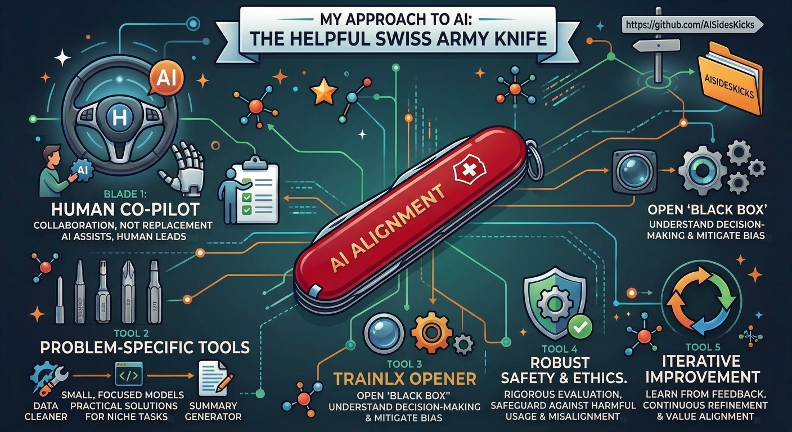
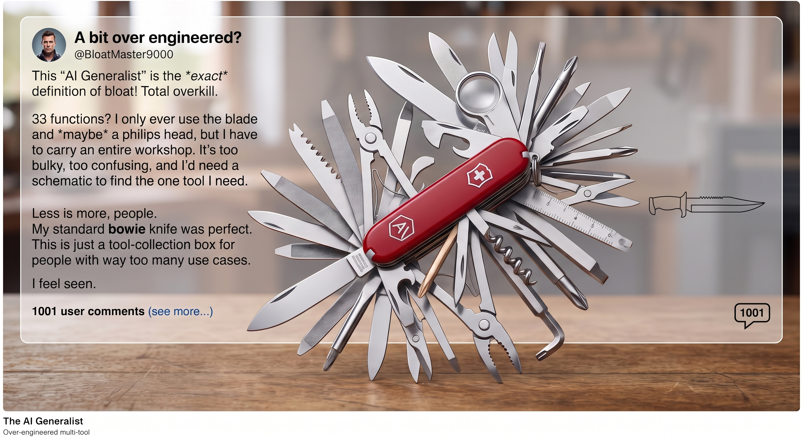
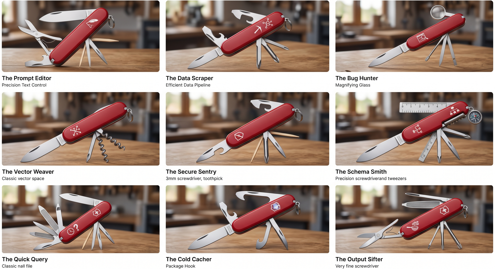

The mission of AISidesKicks is not to build another bureaucratic governance framework or academic checklist. It is a practitioner-led movement aimed at stripping away the mysticism of AI and putting reliable, transparent, and humble utility into the hands of real builders and operators. We treat AI like a pocket knife: a set of sharp, dedicated, understandable tools that serve human intent rather than trying to replace it. Revolutions rarely deliver; good tools do.

Blade 1: Human Co-Pilot (Agency over Automation)
The Stand: We reject the myth of full autonomous replacement. True alignment means the machine never takes the wheel on consequential outcomes.
The Action: Keep human insight, accountability, and ethical judgment at the center of every workflow. AI proposes, accelerates, and synthesizes; humans lead, verify, and decide.
Tool 2: Problem-Specific Tools (Pragmatism over Monoliths)
The Stand: We push back against bloated, opaque "do-everything" models where a lightweight, deterministic component does the job better.
The Action: Champion small, focused models and dedicated utilities - data cleaners, specialized parsers, task-specific summarizers. Composable, right-sized tools that are predictable, cost-effective, and easy to audit.
Tool 3: TrainLX Opener & Observability (Radical Transparency)
The Stand: Black boxes are an unacceptable operational and ethical risk. If you cannot trace how a model reached an answer, you cannot trust it in production.
The Action: Demand deep observability into token flow, inference paths, and training data context. Pry the casing open to expose bias, root out hallucinations, and enable genuine telemetry on every inference call.
Tool 4: Robust Safety & Ethics (Grounded Governance)
The Stand: Safety is not a marketing disclaimer; it is rigorous engineering.
The Action: Build defensive guardrails into the delivery pipeline. Protect systems and users from weaponization, toxic degradation, and prompt injection through continuous runtime evaluation, red-teaming, and uncompromising data hygiene.
Tool 5: Iterative Improvement (Continuous Alignment)
The Stand: Alignment is a living discipline, not a launch-day sign-off.
The Action: Treat alignment as an ongoing operational loop fueled by continuous feedback, metric drift analysis, and adaptation to real-world operational realities.
A family of big models with metered tokens released weekly, and tools growing day by day behind them! Congratulations - your AI stack now has more moving parts than the average space station.

Maybe this new kind of work needs a new set of tools - not a single MEGA tool that promises everything and needs a schematic just to find the blade.
Sure, today we can easily contrast and compare the big harnesses, but realistically we will get only a sense of how fast they clone features from each other. See: harness atlas + Anthropic The AI-Native SDLC playbook

Explore more of my tools on https://github.com/AISidesKicks
The Fascinating Story of the Adjustable Wrench, the Swedish Invention That Replaced Them All
1883 Wrench Twisted Handle Wrench [Patent Remake]

Have you ever seen a wrench like this? [Patent Remake]

Interview with Roman Ugarte from SpaceXAI - How we built and launched Grok Bot

Interview with Mark Zuckerberg on Muse, Meta's biggest AI bet yet

Interview with Richard Socher - The Race to Superintelligence

The Side Kick is a fundamental technique in kickboxing that combines strength, balance, and coordination. It's not the flashy knockout punch. It's the reliable, technical move that keeps you in the fight.
In team sports, the best players aren't the solo heroes but the ones who make everyone around them better - the true sidekicks who turn individual effort into collective momentum.
In cooking, a sidekick refers to dishes that complement the main course. Not the star, but the thing that makes the star look good. Garlic bread knows its place.
So what are AI Sidekicks? Your technical partners that won't steal the spotlight but will absolutely save your bacon when the main event goes sideways.
Because AI always wants to give you more than you asked for. One sidekick? Cute. Multiple sides, multiple kicks? Now we're talking.
AHA - Because we are Advancing HUMANS with AI
For Your Info - Because information is the core of all learning experiences.